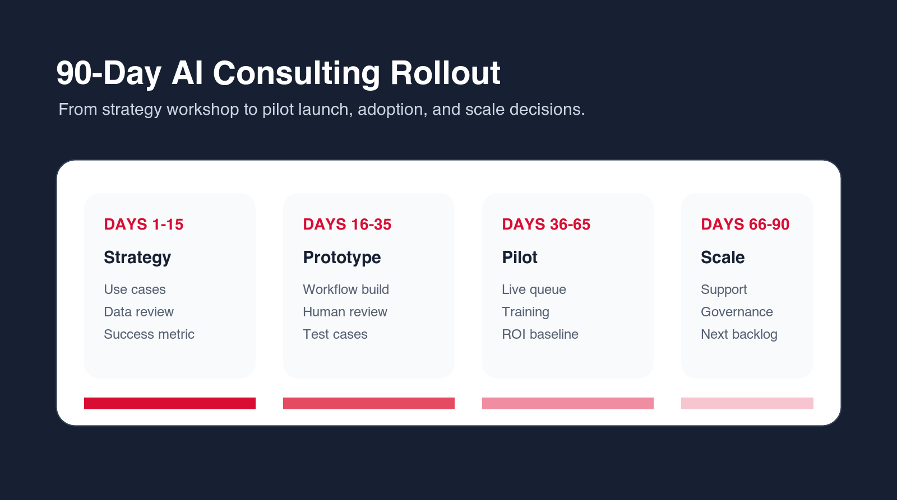

Business Process Automation Software: Buyer Guide
Business process automation software should fit your workflow, not force your team into a generic process. Use this guide to compare platforms, AI features, integrations, reporting, risk controls, and support before buying.

Buyer rule
Do not buy automation software until the first workflow, owner, data source, and success metric are clear.
Primary keyword
Business process automation software
US research snapshot
1,600 searches/mo
Intent
Buyer guide
Decision risk
Tool before workflow
TL;DR
Choose business process automation software only after you know the workflow you want to improve. The right platform should support your triggers, data sources, approvals, integrations, AI features, reporting, security requirements, and maintenance model. If the process is unclear, start with consulting or a small pilot before signing a long software contract.
Business process automation software helps companies reduce manual work by moving tasks through a defined workflow. It can trigger actions, route approvals, update records, send alerts, generate documents, and track status. When AI is included, it can also classify information, summarize context, extract fields, draft responses, and recommend next steps.
The best software purchase starts with a workflow, not a feature list. A tool can look impressive in a demo and still fail if the process is unclear, the data is messy, or the team does not know who owns the workflow after launch. Before comparing vendors, write down the process you want to improve and the metric that will prove the tool is working.
Buyers often make the decision backwards. They compare dashboards, connectors, AI features, pricing pages, and demo videos before deciding what the first workflow should do. That creates risk because almost every automation platform can look useful in a controlled demo. The real test is whether the software can handle your inputs, your exceptions, your approval rules, and your team's capacity to maintain it.
This buyer guide is written for business owners, operations leaders, sales managers, support leaders, finance teams, and internal operations teams that want automation but do not want another unused tool. The goal is not to find the longest feature list. The goal is to choose software that can improve a real process and keep improving after launch.
Business Process Automation Software Buying Criteria
| Criterion | What to check | Why it matters |
|---|---|---|
| Workflow fit | Can it model your real process? | A generic flow can create workarounds. |
| Integrations | Does it connect to your CRM, help desk, finance, documents, and email? | Disconnected automation creates duplicate work. |
| AI controls | Can AI outputs be reviewed, logged, and limited? | AI needs guardrails in business workflows. |
| Reporting | Can you see time saved, status, errors, and adoption? | Automation must be measured after launch. |
Before You Talk to Vendors, Write the Workflow Brief
A workflow brief is a short document that describes what the automation must do. It should name the trigger, input, source systems, AI role, human review point, output, exception path, owner, and success metric. This brief prevents the sales conversation from drifting into generic features that are not relevant to the first process.
The trigger is the event that starts the process. It might be a form submission, new ticket, invoice upload, signed contract, CRM stage change, meeting transcript, support escalation, or scheduled report. If the trigger is unclear, the automation will be unreliable because the system will not know when work begins.
The input is the information the software needs to act. For a lead routing workflow, this might include company name, location, budget signal, service interest, source, and existing account status. For invoice review, it might include supplier, amount, purchase order, due date, tax fields, and approval rules. The clearer the input, the easier the software decision becomes.
The review point is where a person remains responsible. This matters when AI is involved. A system can draft, classify, summarize, and recommend, but some decisions should still be approved by a person. The brief should show which steps are automated, assisted, or manual.
The Main Categories of Automation Software
Business process automation software is not one category. Some platforms focus on workflow building and app connectors. Others focus on robotic process automation, document processing, CRM automation, support automation, project management, no-code internal tools, data integration, or AI agents. Choosing the right category is more important than choosing the most popular product.
Workflow builders are strong when the process moves data between common apps. RPA tools are useful when older systems do not have APIs. Document AI tools are useful when the process starts with files, forms, invoices, or contracts. CRM automation tools are useful when sales and customer data drive the workflow. AI agent tools are useful when a task requires reasoning, research, drafting, or tool use.
The wrong category creates friction. A simple workflow builder may not handle document extraction well. A document AI tool may not manage approvals. An AI agent tool may not provide the operational reporting needed to monitor a queue. A no-code internal tool may create a good review screen but still require integration work. Match the category to the first workflow.
1. Start With Workflow Fit
The first question is whether the software can model your real workflow. Some processes are simple: trigger, action, notification, task. Others need branching logic, approvals, exception queues, document review, role-based permissions, and manual override. If the platform cannot handle the actual process, your team will work around it.
Ask vendors to build or sketch your real workflow, not a generic demo. Give them sample inputs, edge cases, and approval rules. If the demo becomes confusing quickly, the tool may not be the right fit.
Workflow fit also includes how users experience the process. If employees must open five screens, copy data manually, and correct the same fields after automation, the tool has not solved the problem. A good platform should make the next action clearer and reduce the amount of work required to complete it.
Ask whether the tool supports queues, statuses, owners, due dates, comments, audit history, and exception handling. Many business workflows do not fail during the happy path. They fail when information is missing, someone is unavailable, an approval is late, or a record does not match. The software must handle those moments.
2. Evaluate AI Features by Use Case
AI features should be judged by what they do inside your process. Useful AI features include classification, extraction, summarization, drafting, routing recommendations, duplicate detection, and exception analysis. Less useful features are broad AI buttons with no workflow context.
Ask how AI outputs are reviewed, corrected, and logged. Ask whether the tool can show source context. Ask whether sensitive tasks can require human approval. If AI is treated as a black box, be careful.
A useful AI feature should have a specific role inside the workflow. It might classify a support ticket, extract invoice fields, summarize a sales call, draft a follow-up email, compare a document to a policy, or recommend a route for an approval. A broad "AI assistant" feature is less useful if it cannot connect to the process.
Ask whether the AI feature can be constrained. Can it use only approved knowledge sources? Can it be blocked from sending customer-facing messages without review? Can it show confidence or reason codes? Can users correct it? Can managers see how often outputs are accepted or edited? These controls matter more than the model name in most business workflows.
3. Check Integration Depth, Not Just Logo Lists
Vendor pages often show many integration logos. That does not mean the integration can do what your workflow needs. A CRM integration might create leads but not update custom fields. A document integration might read files but not handle permissions. A finance integration might extract invoices but not connect to approval logic.
Ask for the exact triggers, actions, fields, and limitations. Also ask what happens when an integration fails. Business process automation software must handle errors gracefully or the team will lose trust.
Integration depth should be tested with real examples. Do not ask whether the platform connects to your CRM. Ask whether it can read the exact fields used by your lead routing workflow and update the exact records your sales team needs. Do not ask whether it connects to your finance tool. Ask whether it can match invoices to purchase orders and route exceptions to the right person.
Also consider integration ownership. Who manages API keys, permissions, broken connections, field changes, and rate limits? If the software is configured by one person and nobody else understands it, the automation can become fragile. Strong platforms make integration status and errors visible.
4. Review Security, Permissions, and Data Handling
Automation software often touches sensitive records. It may read customer data, sales notes, invoices, contracts, employee information, or internal reports. The buying process should include security questions early, not after the pilot is designed.
Ask where data is stored, how access is controlled, what audit logs exist, how user roles work, and what third-party AI providers are involved. The right answer depends on your risk level, but the vendor should be able to explain it clearly.
Permissions should match the workflow. A support agent should not automatically see finance data because a workflow connects support and billing. A sales user should not see HR documents because the automation platform has broad file access. Role-based access and source permissions matter when automation touches several systems.
Ask how the platform handles deleted records, retention, exports, and logs. If AI is used, ask whether prompts and outputs are stored, whether they are used for model training, and how sensitive data can be excluded. You do not need every enterprise control for every pilot, but you need a clear answer before connecting real business data.

5. Demand Reporting That Shows Operational Value
Reporting should show more than the number of automations that ran. You need to see time saved, failed runs, exceptions, queue status, adoption, cycle time, and quality signals. Without reporting, you cannot tell whether the system is helping.
Before buying, decide the metric that matters most for the first workflow. It might be faster lead response, fewer missed tickets, shorter invoice review time, cleaner CRM records, or fewer manual report updates.
Reporting should separate activity from improvement. A platform might show that one thousand automations ran, but that does not prove the business improved. You need to know whether the workflow is faster, whether fewer tasks are missed, whether users accept AI suggestions, whether exceptions are handled, and whether rework is decreasing.
Good reporting also helps with adoption. If managers can see which teams use the workflow, where bottlenecks remain, and which steps still need manual correction, they can improve the process. Without reporting, automation becomes invisible until something breaks.
6. Plan Rollout and Ownership Before Signing
Software adoption fails when nobody owns the workflow. Before signing, decide who configures the automation, who reviews outputs, who handles errors, who updates rules, and who measures success. The vendor can provide a platform, but your organization still needs an operating model.
If your team does not have the capacity to own setup and rollout, plan for implementation help. That help can come from the vendor, an AI automation agency, or an internal operations team.
Ownership should be named before launch, because unattended automation quickly becomes another system people avoid.
Rollout should start with a small group. Choose users who understand the workflow and will give honest feedback. Let them test normal cases and edge cases. Watch where they hesitate, where they override AI, where they still need manual work, and where the automation creates confusion. That feedback is more useful than a polished internal announcement.
Training should be workflow-specific. Employees do not need a generic lecture about automation. They need to know what changed in their process, what the system does, what they should review, what they should ignore, and how to report problems. The best rollout makes the new workflow feel practical, not mysterious.
7. Compare Pricing Against the Full Workflow Cost
Business process automation software pricing may depend on users, workflows, runs, AI usage, integrations, storage, or support level. The cheapest plan may not include the features needed for the first workflow. The expensive plan may include more than you need.
Compare pricing against the business case. How many hours does the workflow consume? How much delay does it create? How often does rework happen? What is the cost of errors? The right software should make sense against those numbers.
Watch for pricing that scales against the wrong metric. If the tool charges heavily per run and your workflow has high volume, costs may grow faster than value. If it charges per user, you may avoid adding people who need visibility. If AI usage is priced separately, estimate the number of documents, messages, or records the system will process.
Also include implementation cost. Even no-code tools require design, testing, and maintenance. If your team lacks capacity, budget for vendor services, an AI automation agency, or internal operations time. A realistic budget prevents the project from stalling after the subscription is purchased.
8. Know When You Need an AI Automation Agency
If the workflow is unclear, the data is scattered, the integration path is custom, or AI agents are involved, software alone may not be enough. An agency can help map the process, define the pilot, choose software, build custom logic, test outputs, and train users.
This does not mean every project needs an agency forever. A good partner should help you launch the first workflow and leave your team with a maintainable operating model.
Agency help is especially useful during the first automation project because the first workflow sets the pattern. It defines how the company chooses use cases, documents processes, reviews AI outputs, tests edge cases, and supports users. If that foundation is weak, future automation work becomes messy.
The right agency should also be tool-neutral enough to recommend software when software is enough. If the partner always recommends a custom build, be careful. If the partner always recommends one tool regardless of your workflow, be careful. The best answer should follow the process, data, risk, and business goal.
How to Run a Useful Vendor Demo
A useful vendor demo should be built around your workflow, not the vendor's favorite feature path. Send a short workflow brief before the call. Include a sample input, desired output, integration requirements, approval rules, and two edge cases. Ask the vendor to show how their platform would handle those examples.
During the demo, look for friction. How many steps does configuration require? Can a non-technical operations owner understand the workflow? Are exceptions visible? Can a user edit AI output? Does the platform show why something failed? Can the vendor explain limitations without deflecting?
After the demo, write down what the platform handled well and what required workarounds. A workaround is not always a deal breaker, but too many workarounds mean the software may not fit the process. If the vendor cannot demonstrate the workflow with your examples, do not assume implementation will be easier later.
A Practical 30-60-90 Day Implementation Plan
In the first thirty days, focus on selection and workflow design. Choose one process, write the workflow brief, gather examples, compare software fit, confirm integrations, and define the success metric. Avoid signing a large contract before the first workflow is clear.
In days thirty to sixty, build and test the first pilot. Configure the workflow, connect the required systems, set AI rules or prompts, define approval paths, and test normal and edge cases. Make sure errors and exceptions are visible. Prepare training for the first users.
In days sixty to ninety, run the workflow with a small team. Measure cycle time, errors, adoption, AI output acceptance, and manual work removed. Decide whether to expand, adjust, or stop. Use the results to update the automation backlog and decide which processes should come next.
The 30-60-90 plan should also define what will not be included. That matters because automation software projects often grow during implementation. A simple lead routing workflow becomes a new CRM design. A document intake project becomes a full knowledge management program. A reporting automation becomes a company-wide data cleanup effort. Those larger projects may be valid, but they should not be hidden inside the first pilot.
During the first thirty days, the team should write down exclusions as clearly as requirements. For example, the pilot may route inbound requests but not change the sales compensation model. It may summarize support tickets but not send customer-facing replies automatically. It may extract invoice fields but not approve payments. Clear exclusions protect momentum and make it easier for stakeholders to agree on the first release.
During days thirty to sixty, the team should test handoffs as much as features. A workflow that creates the right task but sends it to the wrong person is not ready. A workflow that extracts the right value but hides the confidence level is not ready. A workflow that works only when one admin is watching it is not ready. Test the operating reality, not only the happy path.
During days sixty to ninety, leadership should review business impact before expanding licenses. If the pilot does not show measurable value, fix the workflow before buying more seats or adding more processes. Expansion should be earned by evidence: faster cycle time, fewer errors, fewer status updates, better visibility, higher adoption, or more consistent output quality.
Common Buying Mistakes to Avoid
The first mistake is buying for every possible future workflow instead of the first valuable workflow. A broad platform may be useful later, but the first purchase should still prove value in a specific process. If the first workflow fails, the larger roadmap will lose support.
The second mistake is ignoring the people who will use the workflow. Automation designed only by leadership can miss the practical details employees handle every day. Bring process owners and frontline users into testing early. They will identify missing fields, awkward handoffs, and edge cases faster than anyone else.
The third mistake is treating AI as the whole solution. AI can classify, summarize, draft, extract, and recommend, but business process automation also needs triggers, permissions, integration, review, logging, training, and support. A good tool handles the workflow, not only the AI output.
Another mistake is underestimating permission design. Business process automation software often touches customer data, financial records, internal notes, documents, and employee activity. If access rules are copied casually from old systems, the new automation can expose too much information or block the people who need to act. Permissions should be reviewed during workflow design, not after launch.
Teams also make the mistake of accepting weak reporting because the workflow itself looks useful. Reporting is not a bonus. It is how the business knows whether the tool is working. At minimum, the system should show volume, cycle time, exceptions, failed runs, manual overrides, and owner activity. Without reporting, the team will not know whether automation improved the process or simply moved the work into a new interface.
A final mistake is buying a tool that only one person understands. If the automation depends on a single admin, every change becomes a bottleneck. The project should include documentation, admin training, and a simple change process. Even when an agency or vendor helps with implementation, the business should understand how the workflow works and who can maintain it.
Final Recommendation: Buy Around the First Workflow
The safest buying path is to choose one workflow and evaluate software against that workflow. If the tool can model the process, connect the systems, support AI controls, show useful reporting, and fit the team's capacity, it may be the right choice. If the workflow needs design, data cleanup, custom integration, or AI agent guardrails, bring in an AI automation agency before buying too much software.
Business process automation software should make work calmer and faster. It should reduce manual handling, make status visible, improve consistency, and give people better information at the right time. If the tool creates more checking, more confusion, or more disconnected work, the process needs redesign.
Pilot Scorecard: How to Judge the First 30 Days
The first month after launch should be measured carefully. Do not judge the tool only by whether it is technically live. Judge whether the workflow is easier for the people who use it. Track cycle time, failed runs, manual corrections, user adoption, exception volume, and the amount of status chasing removed.
Ask users what still feels awkward. They may tell you that the automation creates tasks too early, routes requests to the wrong owner, misses a field, sends too many alerts, or requires extra checking. This feedback is not failure. It is the information needed to improve the workflow before expanding it.
The pilot should also show whether AI is helping. If users accept most AI summaries or drafts with small edits, the feature is useful. If they rewrite everything, the prompts, knowledge sources, categories, or workflow context need work. If they do not trust the output, add better evidence and review controls.
At the end of the first month, make a clear decision. Expand, adjust, pause, or retire the workflow. Do not let pilots drift. A pilot that never becomes a supported workflow wastes attention and makes future automation work harder to sell internally.
Migration and Cleanup: The Hidden Work Behind Automation Software
Many automation software projects include hidden cleanup work. Forms may need better fields. CRM stages may need standardization. Document folders may need permissions. Knowledge bases may need old articles removed. Approval policies may need to be written down. This work is not a distraction from automation. It is often the reason automation becomes reliable.
Do not migrate every broken process into the new tool. If a workflow is unclear, simplify it before automation. If a field is no longer used, remove it. If two teams classify requests differently, agree on a shared taxonomy. If documents are outdated, archive them. Automation should improve the operating model, not preserve every historical workaround.
A practical cleanup path starts with the first workflow only. Clean the fields, sources, permissions, and rules needed for that pilot. This keeps the work manageable. Once the pilot proves value, repeat the cleanup pattern for the next workflow.
Vendor Services vs AI Automation Agency Support
Some software vendors offer implementation services. This can be useful when the workflow fits their platform closely. Vendor teams know their tool well, can configure common patterns quickly, and may be the best choice for standard setup. The limitation is that vendor services may naturally steer the solution toward that vendor's product.
An AI automation agency can be more useful when the business needs tool selection, custom integration, workflow redesign, AI agent design, or support across several systems. The agency should be able to say when the vendor's tool is enough and when another tool or custom workflow is better.
The best approach can combine both. The vendor supports platform-specific configuration, while the agency handles workflow design, data readiness, AI guardrails, custom integration, and rollout. This gives the business product expertise and operational design support without forcing one team to do everything.
How to Scale After the First Workflow Works
After the first workflow works, create a scale plan. Do not simply automate the next loudest request. Build a backlog ranked by value, readiness, risk, and owner commitment. Use the first workflow as the reference model for documentation, testing, user training, and support.
Scaling should include governance. Decide which teams can request automations, who approves new workflows, how AI features are reviewed, where documentation lives, and how performance is measured. Without governance, automation expands into a messy collection of rules and tools that are hard to maintain.
The goal is a repeatable automation capability. The company should get better at identifying workflows, choosing tools, testing AI outputs, training users, and measuring results. Business process automation software is only one part of that capability. The operating model around it is what makes the investment last.
Scaling should also protect simplicity. If every new workflow requires a new tool, a new approval habit, and a new reporting format, the automation program will become hard to manage. Reuse patterns where possible. Use the same naming conventions, owner roles, test examples, documentation format, and review cadence. Familiar patterns make each new workflow easier for users to understand.
The strongest scale plans create a center of gravity without creating unnecessary bureaucracy. This can be a small automation committee, an operations owner, or a shared backlog review. The purpose is not to slow teams down. The purpose is to prevent duplicated tools, unmanaged AI usage, unclear data access, and unsupported workflows.
A mature business process automation program will usually include several layers: a system of record, a workflow layer, AI support for classification or drafting, review controls, reporting, and documentation. The software should fit into that architecture. If a tool cannot explain where it sits, what data it owns, and how people maintain it, it may create more complexity than value.
Stakeholder Alignment Before the Contract
Before signing for business process automation software, align the stakeholders who will be affected by the first workflow. Sales may care about response speed. Finance may care about approval control. Operations may care about fewer handoffs. IT may care about access and integration risk. The users may care about whether the new process actually removes work. If these groups expect different outcomes, the software will be judged unfairly.
The alignment conversation should produce a short decision record. It should explain the workflow being automated, the reason it was chosen, the metric that matters, the systems involved, the approval path, the owner, the launch group, and the review date. This record does not need to be long. It needs to prevent confusion after the purchase.
Stakeholder alignment also helps with change management. People are more willing to use automation when they understand what it is meant to remove and what it is not meant to replace. If the message is vague, employees may assume the tool is monitoring them, replacing judgment, or creating extra steps. Clear communication should say which manual tasks will go away, which review responsibilities remain, and where users can report problems.
This is where many software implementations can benefit from consulting or agency support. The issue is not that the platform is weak. The issue is that the business needs a practical operating design around the platform. When the operating design is clear before the contract, implementation becomes calmer and the first pilot has a much better chance of turning into a supported workflow.

Final Buyer Checklist
- Write the first workflow before comparing vendors.
- Test the platform against real examples and edge cases.
- Confirm the exact integrations, triggers, actions, and field access.
- Check AI review controls, logging, and permission boundaries.
- Define the owner, support process, and success metric before launch.
- Use an agency when strategy, custom integration, or AI agent design is needed.
Free software fit review
Choose the right automation software path.
Put your work email below and we will send a quick first-pass review path for your first automation software decision.
FAQ: Business Process Automation Software
What is business process automation software?
Business process automation software helps companies move repeatable workflows through defined steps with less manual work. It can trigger actions, route approvals, update records, send alerts, generate documents, track status, and sometimes use AI for classification, extraction, summarization, and drafting.
How do I choose business process automation software?
Start with the workflow, not the vendor. Compare workflow fit, integrations, AI controls, security, reporting, pricing, support, and ownership requirements against your first automation use case.
Should automation software include AI?
AI is useful when the workflow requires classification, extraction, summarization, drafting, routing recommendations, or exception analysis. It should include human review and logs for sensitive processes.
When do I need an agency instead of software alone?
You may need an agency when the workflow is unclear, integrations are custom, data readiness is weak, AI agents are involved, or your team needs help with setup, testing, training, and rollout.
Can Go Expandia help choose automation software?
Yes. Go Expandia can map your workflow, compare software fit, design an AI automation pilot, build custom workflows, and support rollout after launch.
Ready to Choose Automation Software?
Go Expandia helps businesses compare tools, map workflows, and launch practical AI automation pilots.